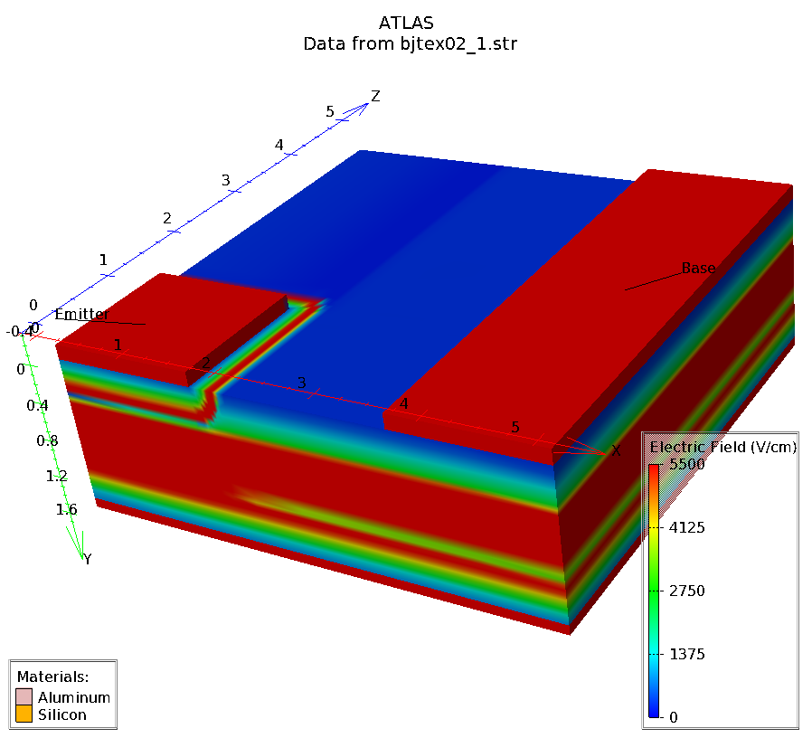
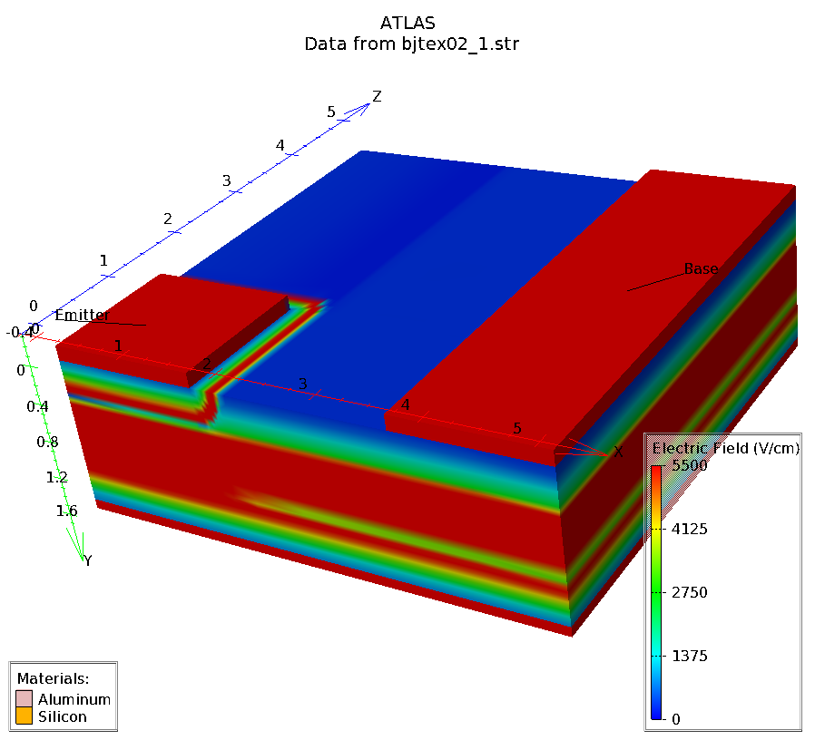
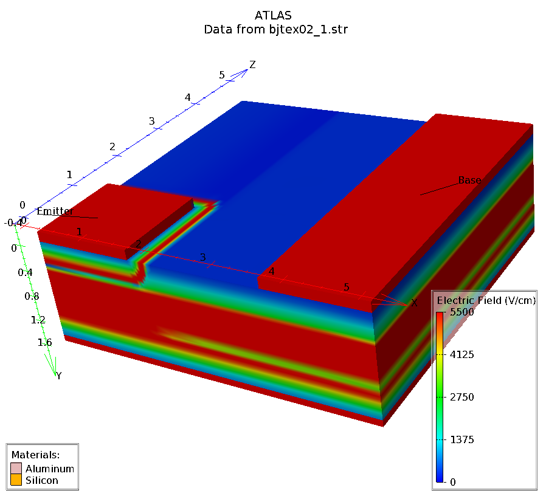

| Requires: | DevEdit 3D/Device 3D |
| Minimum Versions: | Atlas 5.26.1.R |

This example demonstrates Gummel plot simulation of a BJT structure in three dimensions. It shows:
In this example a bipolar transistor is constructed using DevEdit 3D. The structure is then passed to Atlas for electrical testing. The input file consists of the following 2 main portions:
The first stage of the input constructs the BJT geometry, material regions, doping profiles, and electrodes in DevEdit 3D. The structure was created in DevEdit 3D by drawing the device regions in interactive mode and specifying 3D doping distribution. Finally the mesh was generated automatically by specifying basic mesh constraints and refining in the important areas of the device.
The Atlas simulation begins by reading in the structure from DevEdit 3D. DeckBuild provides autointerface between DevEdit 3D and Atlas so that the structure produced by DevEdit 3D is transferred to Atlas without having to indicate the mesh statement.
The models statement is used to select a set of physical models for this simulation. In this case, these models are 'srh' and 'auger' recombination, the concentration and field dependent mobility model, and the two carriers model
Then the initial solution for zero biases is obtained using solve init The emitter voltage is then ramped negatively. The Newton algorithm is used for these calculations. This is the default method in Atlas.
The results of simulation are then displayed using TonyPlot.
To load and run this example, select the Load button in DeckBuild > Examples. This will copy the input file and any support files to your current working directory. Select the Run button in DeckBuild to execute the example.